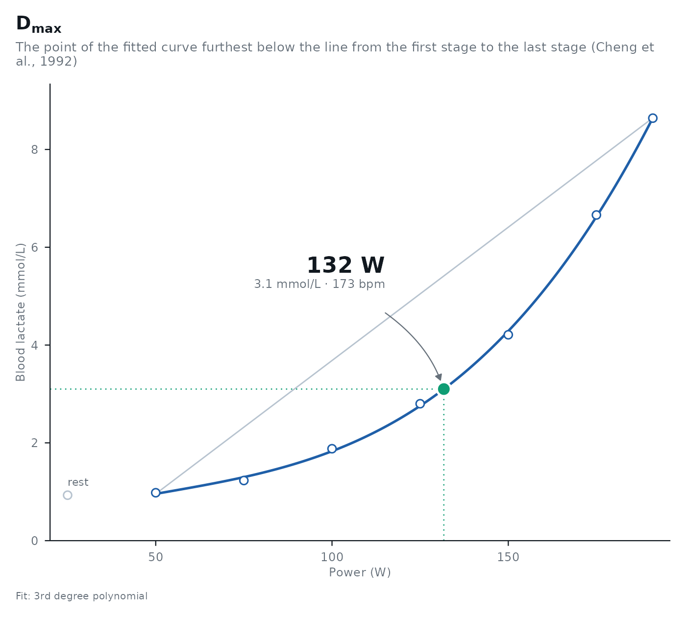

Estimates the lactate thresholds of a step incremental test with every method at once, or the methods you choose,
and returns them with the lactate, heart rate and RPE at each one. How each method is defined, how lactater computes
it and what the evidence says is in the article
The methods and the evidence; the essentials are
under Details.
Usage
lactate_threshold(
.data,
intensity_column,
lactate_column,
heart_rate_column = NULL,
rpe_column = NULL,
rpe_scale = c("6-20", "CR10"),
method = c("Log-log", "OBLA", "Bsln+", "Dmax", "LTP", "LTratio", "IAT", "Keul",
"Simon", "Stegmann"),
fit = c("3rd degree polynomial", "4th degree polynomial", "B-spline"),
include_baseline = FALSE,
sport = c("cycling", "running", "swimming", "rowing"),
loglog_restrainer = 1,
plot = TRUE,
dmax_anchor = c("original", "fitted", "observed"),
moddmax_rise = 0.4,
ltp_fix_first_slope = FALSE,
dmax_methods = c("Dmax", "ModDmax", "Exp-Dmax", "Log-Poly-ModDmax", "Log-Exp-ModDmax"),
fixed = c(2, 2.5, 3, 3.5, 4),
baseline_plus = c(0.5, 1, 1.5),
iat_rise = 1.5,
ltp_breakpoints = 2,
recovery = NULL,
stage_duration = NULL,
last_stage_duration = NULL,
site = NULL,
grade = NULL,
max_intensity = NULL,
sample = c("blood", "plasma", "sweat", "interstitial fluid"),
ci = FALSE,
n_boot = 500,
ci_level = 0.95,
seed = NULL,
lt1 = "Bsln + 0.5",
lt2 = "Log-Poly-ModDmax",
.by = NULL
)Arguments
- .data
One row per stage: the intensity, the lactate at the end of the stage and, if recorded, the heart rate and the rating of perceived exertion (RPE). The resting sample, if any, is the row with intensity 0. Rows with a missing intensity or lactate are dropped with a warning.
- intensity_column
The name of the intensity column: bare, as a string, or a variable that holds the name.
- lactate_column
The name of the lactate column.
- heart_rate_column
The name of the heart rate column, if recorded. The heart rate at each threshold is interpolated linearly between the measured stages, and is
NAoutside them: a threshold there is doubtful anyway (seelactate_checks()). A zone boundary below the first stage, which is common for zone 1|2, is instead extrapolated (seelactate_zones()).- rpe_column
The name of the RPE column, if recorded. The RPE at each threshold is interpolated like the heart rate. A heart rate or RPE column with no values, as when none was written on the recording form, is left out.
- rpe_scale
The RPE scale:
"6-20"(Borg's RPE scale, default) or"CR10"(Borg's category-ratio scale, 0 to 10, with ratings above 10 allowed for an absolute maximum).- method
The method families to estimate, one or more of
"Log-log","OBLA","Bsln+","Dmax","LTP","LTratio","IAT","Keul","Simon"and"Stegmann". Defaults to all of them (KeulandSimononly for running,Stegmannonly whenrecoveryis given).- fit
The curve fitted to the lactate values:
"3rd degree polynomial"(default),"4th degree polynomial"or"B-spline"(a natural cubic regression spline with 4 degrees of freedom; with 6 stages it nearly passes through every point). OBLA, Bsln+ and Stegmann read their thresholds off this curve; the other methods fit their own, as their papers did (seeDetails).lactate_fit_quality()compares the curves on your data.- include_baseline
Whether the resting sample is part of the curve fitted with
fit(used by OBLA, Bsln+, LTratio, IAT and Stegmann). In the fit it is placed one median step before the first stage. Log-log, LTP and the Dmax family fit the exercise stages only. Defaults toFALSE.- sport
One of
"cycling"(intensity in W),"running"(km/h),"swimming"(m/s) or"rowing"(W). For running, swimming and rowing apacecolumn is added: s/km, s/100 m, and the Concept2 split in s/500 m (watts = 2.80 / pace^3, pace in s/m).- loglog_restrainer
Deprecated. Log-log uses all stages, as Beaver et al. (1985) did. A value below
1still keeps only that share of the first stages, with a warning; it will be removed in a future version.- plot
Whether to draw the plot of each method into a
plotcolumn. Defaults toTRUE.- dmax_anchor
Where the ends of the Dmax lines sit:
"original"(default) as in each variant's paper,"fitted"on the fitted curve,"observed"at the measured lactate of the start and end stages. SeeDetails.- moddmax_rise
The rise in lactate (mmol/L) between two consecutive stages that marks the first rise in ModDmax. Defaults to
0.4(Bishop et al., 1998, who measured fingertip plasma lactate); change it for other sample types such as sweat.- ltp_fix_first_slope
Whether the first LTP segment (before LTP1) is flat instead of estimated. Defaults to
FALSE.- dmax_methods
Which Dmax variants to estimate when
methodincludes"Dmax": one or more of"Dmax","ModDmax","Exp-Dmax","LTP1-Poly-ModDmax","Log-Poly-ModDmax"and"Log-Exp-ModDmax". Defaults to all but"LTP1-Poly-ModDmax"(a line from LTP1 instead of Log-log; not part of Jamnick et al., 2018).- fixed
The fixed lactate concentrations (mmol/L) for OBLA. Defaults to
c(2, 2.5, 3, 3.5, 4).- baseline_plus
The rises above baseline (mmol/L) for Bsln+. Defaults to
c(0.5, 1, 1.5).- iat_rise
The rise (mmol/L) above the lactate at LTratio that defines IAT. Defaults to
1.5(Dickhuth et al., 1999).- ltp_breakpoints
The number of lactate turn points to fit:
2(default) for a test to exhaustion, or1for a submaximal test that stopped before the second turn point (LTP1 only; LTP2 isNA).- recovery
The lactate samples taken after the end of the test, for Stegmann: a data frame with the columns
time(minutes after the end of exercise) andlactate. Sample until lactate has fallen back below its end-of-exercise value; Stegmann et al. (1981) sampled at 1, 2, 5 and 10 min.- stage_duration
The duration of each stage, in minutes, or
NULL. Stegmann needs it to put the recovery minutes on the intensity axis, andpredict_performance(),reference_percentiles()andcompare_tests()check it against their protocols (a different stage length moves the thresholds).- last_stage_duration
The minutes completed in the last stage when the test ended before the stage did, or
NULL(the last stage was completed). The intensity of the last stage is then time-weighted: the stage before it plus the completed share of the increment (Kuipers et al., 2003), so 2 of 3 min at 200 W after 175 W count as 191.7 W. Needsstage_duration. The lactate of a short last stage had less time to rise;max_intensityleaves the stage out instead.- site
Where the blood was sampled:
"earlobe","fingertip","venous","other", orNULL(not recorded). It does not change the calculations;predict_performance(),reference_percentiles()andcompare_tests()check it against their protocols.- grade
The treadmill grade (%) of a running test, or
NULL. Checked likesite.- max_intensity
Stages above this intensity are left out of every method (an incomplete last stage, or one where lactate plateaus). Defaults to
NULL(keep all stages).- sample
The sample the lactate was measured in:
"blood"(default),"plasma","sweat"or"interstitial fluid". It does not change the calculations;lactate_checks()warns when a method relies on fixed blood lactate concentrations that do not transfer to the sample.- ci
Whether to add bootstrap confidence intervals for the intensities (
intensity_low,intensity_high). SeeDetails. Defaults toFALSE.- n_boot
Number of bootstrap replicates when
ci = TRUE. Defaults to500.- ci_level
Confidence level when
ci = TRUE. Defaults to0.95.- seed
A seed for the bootstrap replicates, so that the intervals are reproducible, or
NULLto draw them from the current random stream (then callset.seed()first for reproducibility).- lt1, lt2
The thresholds that mark LT1 and LT2 for this athlete: a method (e.g.
"Log-log","LTP2") or an intensity. Chosen once here, they are whatlactate_zones(),test_report(), the overview plot and the header ofcompare_tests()andpredict_performance()use. Default to"Bsln + 0.5"and"Log-Poly-ModDmax"; seelactate_zones()for why.- .by
Names of columns that identify separate tests (
"athlete"orathlete, orc("athlete", "date")). Each test is analyzed on its own and the results are bound together, with the.bycolumns first.
Value
a lactate_thresholds tibble (plot it with autoplot() or plot()) with one row per threshold:
- method_category
the method family.
- method
the method.
- fitting
the curve the method used.
- intensity
the intensity at the threshold, in whole watts, km/h to 0.1 or m/s to 0.01;
NAwhen the method found no threshold in the tested range.- intensity_low, intensity_high
with
ci = TRUE, the confidence interval of the intensity.- pace
for running, swimming and rowing, the pace at the threshold.
- lactate
the lactate at the threshold.
- heart_rate
the heart rate at the threshold, when
heart_rate_columnis given.- rpe
the RPE at the threshold, when
rpe_columnis given.- plot
the plot of the method, when
plot = TRUE.
With .by, the columns that identify each test come first.
Details
Log-log
Two straight lines through log(lactate) against log(intensity), split at a measured stage that belongs to both
lines, at the split with "the lowest residuals sum of squares" (Beaver et al., 1985; Jamnick et al., 2018), with
at least three stages per line, so at least five stages. The threshold is where the lines cross, and the lactate
is read off the lines; it is NA when they cross outside the measured stages. Beaver et al. plotted lactate
against oxygen uptake; lactater uses the intensity.
OBLA
The intensity at which the fitted curve reaches each concentration in fixed, 2.0 to 4.0 mmol/L by default
(Heck et al., 1985; Kindermann et al., 1979; Skinner & McLellan, 1980), solved exactly. When the curve crosses a
target more than once (an early lactate dip), the last crossing where lactate rises through it is used: from there
on, lactate stays above the target. NA when the curve never reaches it.
Bsln+
The intensity at which the fitted curve is each rise in baseline_plus above the baseline (Berg et al., 1990;
Zoladz et al., 1995), solved like OBLA. The baseline is one sample: the resting sample when there is one, otherwise
the first stage. Studies differ here: Heuberger et al. (2018) used the mean of the samples before lactate rose, and
Jamnick et al. (2018) wrote only "baseline value(s)". One sample carries the analyzer error, about 0.1 mmol/L at
low concentrations (Bonaventura et al., 2015): on demo_data, a baseline 0.1 mmol/L lower or higher moves
Bsln + 0.5 from 83 W to 77 or 88 W. lactate_diagnostics() shows how much each threshold rests on the baseline
sample, and lactate_checks() says when the LT1 methods disagree.
The Dmax family
Every variant takes the point of its curve that lies furthest below a straight line ending at the last stage (the
perpendicular distance peaks at the same point as the vertical one). The variants differ in the curve, which fit
does not change, and in where the line starts:
Dmax: a 3rd degree polynomial, from the first stage (Cheng et al., 1992).
ModDmax: the polynomial, from the stage preceding the first rise of at least
moddmax_rise(Bishop et al., 1998). Bishop et al. and Jamnick et al. (2018) wrote a rise of "> 0.4"; lactater counts a rise of exactly 0.4 too, as Heuberger et al. (2018) did.Exp-Dmax: an exponential plus constant, from the first stage (Hughson et al., 1987).
Log-Poly-ModDmax and Log-Exp-ModDmax: the polynomial or the exponential, from the Log-log threshold, computed without the resting sample (Jamnick et al., 2018).
LTP1-Poly-ModDmax: the polynomial, from LTP1 (only when requested in
dmax_methods).
With dmax_anchor = "original" (default) the ends of the line sit where each paper put them: on the fitted curve
for Dmax and Exp-Dmax ("the two end points of the curve", Cheng et al., 1992), and at the measured lactate for
ModDmax ("the LT and the final lactate point", Bishop et al., 1998) and for the end of the Log-log variants ("the
final lactate point", Jamnick et al., 2018). "fitted" puts every end on the curve and "observed" every end at
the measured values (Heuberger et al., 2018); a line starting at the Log-log threshold or LTP1 always starts on the
curve. NA when the curve never dips below the line. The resting sample is never used.
LTP
Three connected straight segments through the exercise stages, with the two breakpoints found by exhaustive search
for the lowest residual sum of squares, at least two stages per segment (so at least six stages; four with
ltp_breakpoints = 1, which fits LTP1 only). ltp_fix_first_slope = TRUE keeps the first segment flat. LTP1 is
the first rise of lactate above resting levels and LTP2 the second, accelerated rise (Hofmann et al., 1997; Pokan
et al., 1997; Hofmann & Tschakert, 2017). The original papers fitted each turn point in its own window, on tests
with 1-min or 90-s stages; with the 6 to 10 stages of a step test the windows hold too few stages, so lactater fits
the three segments together. The fit has 6 parameters, so with 6 or 7 stages a single stage can move the turn
points a lot: lactate_checks() says so, and lactate_diagnostics() shows by how much.
LTratio and IAT
LTratio is the intensity where lactate / intensity is lowest on a B-spline through the stages (Dickhuth et al.,
1999). IAT, the individual anaerobic threshold of Dickhuth et al. (1999), is the intensity iat_rise (1.5 mmol/L)
above the lactate at LTratio, on the same spline (as described by Heuberger et al., 2018). Like OBLA and Bsln+, IAT
uses an absolute lactate step, so it assumes blood lactate.
Keul and Simon
The individual anaerobic thresholds of Keul et al. (1979) and Simon et al. (1981), for running only: the speed at
which a 3rd degree polynomial through the exercise stages rises by 1.26 mmol/L per km/h (Keul; a tangent at
51°34') or by 1 mmol/L per km/h (Simon; 45°). Keul et al. took the mean slope at 4 mmol/L of 60 tests of 20
cross-country skiers; Simon et al. took 45° as the point of the largest change in slope. Both tested on a treadmill
at a 5% grade with 3-min stages of 2 km/h, sampling earlobe blood, and set the slope on that protocol. A slope in
watts or m/s has no counterpart in these papers, so the methods run only with sport = "running". When the slope
reaches the value more than once, the last crossing where it rises through it is used; NA when it never does
within the stages.
Stegmann
The individual anaerobic threshold of Stegmann et al. (1981). After the test, blood lactate first rises and then
falls. From the point in recovery where it is back at its end-of-exercise value, a tangent is drawn to the lactate
curve of the test; the point of contact is the threshold, and the slope of the tangent the maximal rate of lactate
elimination. Stegmann et al. plotted lactate against time, so lactater puts the recovery minutes on the intensity
axis at the rate the test rose (the median increment between stages divided by stage_duration), interpolates
the return to the end-of-exercise value between the recovery samples after the post-exercise peak, and draws the
tangent to the curve fitted with fit. When lactate never falls back to its end value, or never rises after the
test, the threshold is NA.
Bootstrap intervals
With ci = TRUE, each threshold gets an approximate percentile bootstrap interval for the noise of the samples.
Each replicate keeps the curve fitted to the data and gives every stage its own residual with a random sign (a
wild bootstrap; Wu, 1986; Davidson & Flachaire, 2008), because the error of a lactate sample grows with its
concentration; the residuals are scaled for their leverage and widened for the few degrees of freedom a step test
leaves. Every method is then run again on each replicate, and the bounds are rounded outward. Replicates on which
a method fails are left out, with a warning. The interval does not include the bias of the fitted curve, errors
that are the same in every sample (analyzer bias, sampling site), or the day-to-day variation of the athlete,
which is larger (about 3.5-4% of the intensity; Heuberger et al., 2018; see compare_tests()). In simulated tests,
95% intervals held the true threshold in 84% to 97% of tests, depending on the method and the analyzer error; how
they were calibrated is in Checking the analysis.
References
Beaver WL, Wasserman K, Whipp BJ. Improved detection of lactate threshold during exercise using a log-log transformation. Journal of Applied Physiology. 1985;59(6):1936–40.
Heck H, Mader A, Hess G, Mücke S, Müller R, Hollmann W. Justification of the 4-mmol/l Lactate Threshold. International Journal of Sports Medicine. 1985;06(03):117–30.
Kindermann W, Simon G, Keul J. The significance of the aerobic-anaerobic transition for the determination of work load intensities during endurance training. European Journal of Applied Physiology and Occupational Physiology. 1979;42(1):25–34.
Skinner JS, Mclellan TH. The Transition from Aerobic to Anaerobic Metabolism. Research Quarterly for Exercise and Sport. 1980;51(1):234–48.
Bonaventura JM, Sharpe K, Knight E, Fuller KL, Tanner RK, Gore CJ. Reliability and accuracy of six hand-held blood lactate analysers. Journal of Sports Science and Medicine. 2015;14:203-214.
Berg A, Jakob E, Lehmann M, Dickhuth HH, Huber G, Keul J. Current aspects of modern ergometry. Pneumologie. 1990;44(1):2–13.
Zoladz JA, Rademaker AC, Sargeant AJ. Non-linear relationship between O2 uptake and power output at high intensities of exercise in humans. The Journal of Physiology. 1995;488(1):211–7.
Cheng B, Kuipers H, Snyder A, Keizer H, Jeukendrup A, Hesselink M. A New Approach for the Determination of Ventilatory and Lactate Thresholds. International Journal of Sports Medicine. 1992;13(07):518–22.
Bishop D, Jenkins DG, Mackinnon LT. The relationship between plasma lactate parameters, Wpeak and 1-h cycling performance in women. Med Sci Sports Exerc. 1998;30(8):1270–5.
Hughson RL, Weisiger KH, Swanson GD. Blood lactate concentration increases as a continuous function in progressive exercise. Journal of Applied Physiology. 1987;62(5):1975–81.
Jamnick NA, Botella J, Pyne DB, Bishop DJ. Manipulating graded exercise test variables affects the validity of the lactate threshold and VO2peak. PLOS ONE. 2018;13(7):e0199794.
Davidson R, Flachaire E. The wild bootstrap, tamed at last. Journal of Econometrics. 2008;146(1):162-169. doi:10.1016/j.jeconom.2008.08.003
Wu CFJ. Jackknife, bootstrap and other resampling methods in regression analysis. The Annals of Statistics. 1986;14(4):1261-1295. doi:10.1214/aos/1176350142
Heuberger JAAC, Gal P, Stuurman FE, de Muinck Keizer WAS, Mejia Miranda Y, Cohen AF. Repeatability and predictive value of lactate threshold concepts in endurance sports. PLOS ONE. 2018;13(11):e0206846.
Hofmann P, Tschakert G. Intensity- and Duration-Based Options to Regulate Endurance Training. Front Physiol. 2017;8:337.
Hofmann P, Pokan R, von Duvillard SP, Seibert FJ, Zweiker R, Schmid P. Heart rate performance curve during incremental cycle ergometer exercise in healthy young male subjects. Med Sci Sports Exerc. 1997;29(6):762–8.
Pokan R, Hofmann P, Von Duvillard SP, et al. Left ventricular function in response to the transition from aerobic to anaerobic metabolism. Med Sci Sports Exerc. 1997;29(8):1040–7.
Dickhuth H-H, Yin L, Niess A, et al. Ventilatory, Lactate-Derived and Catecholamine Thresholds During Incremental Treadmill Running: Relationship and Reproducibility. International Journal of Sports Medicine. 1999;20(02):122–7.
Kuipers H, Rietjens G, Verstappen F, Schoenmakers H, Hofman G. Effects of stage duration in incremental running tests on physiological variables. International Journal of Sports Medicine. 2003;24(7):486–91. doi:10.1055/s-2003-42020
Stegmann H, Kindermann W, Schnabel A. Lactate kinetics and individual anaerobic threshold. International Journal of Sports Medicine. 1981;2(3):160–5. doi:10.1055/s-2008-1034604
Keul J, Simon G, Berg A, Dickhuth HH, Goerttler I, Kübel R. Bestimmung der individuellen anaeroben Schwelle zur Leistungsbewertung und Trainingsgestaltung. Deutsche Zeitschrift für Sportmedizin. 1979;30(7):212–8.
Simon G, Berg A, Dickhuth HH, Simon-Alt A, Keul J. Bestimmung der anaeroben Schwelle in Abhängigkeit vom Alter und von der Leistungsfähigkeit. Deutsche Zeitschrift für Sportmedizin. 1981;32(1):7–14.
Examples
results <- lactate_threshold(demo_data, intensity, lactate, heart_rate, plot = FALSE)
results
#> # Lactate thresholds: cycling, 3rd degree polynomial, 7 stages + rest
#> # LT1: 83 W (Bsln + 0.5)
#> # LT2: 149 W (Log-Poly-ModDmax)
#> method_category method fitting intensity lactate heart_rate
#> <fct> <fct> <chr> <dbl> <dbl> <dbl>
#> 1 Log-log Log-log 3rd degree pol… 101 1.8 154
#> 2 OBLA OBLA 2.0 3rd degree pol… 106 2 158
#> 3 OBLA OBLA 2.5 3rd degree pol… 119 2.5 166
#> 4 OBLA OBLA 3.0 3rd degree pol… 130 3 172
#> 5 OBLA OBLA 3.5 3rd degree pol… 139 3.5 177
#> 6 OBLA OBLA 4.0 3rd degree pol… 146 4 180
#> 7 Bsln+ Bsln + 0.5 3rd degree pol… 83 1.4 140
#> 8 Bsln+ Bsln + 1.0 3rd degree pol… 103 1.9 156
#> 9 Bsln+ Bsln + 1.5 3rd degree pol… 118 2.4 165
#> 10 Dmax Dmax 3rd degree pol… 132 3.1 173
#> 11 Dmax ModDmax 3rd degree pol… 140 3.6 177
#> 12 Dmax Exp-Dmax Exponential (d… 135 3.3 175
#> 13 Dmax Log-Poly-ModDmax 3rd degree pol… 149 4.2 182
#> 14 Dmax Log-Exp-ModDmax Exponential (d… 152 4.4 183
#> 15 LTP LTP1 3rd degree pol… 111 2 161
#> 16 LTP LTP2 3rd degree pol… 160 4.7 186
#> 17 LTratio LTratio B-Spline (defa… 77 1.3 136
#> 18 IAT IAT B-Spline (defa… 125 2.8 170
lactate_checks(results)
#> 10 checks: 9 passed, 1 note, 0 warnings
#> ℹ Stages 7 stages: the LTP fit has 6 parameters, so 1 degree of freedom is left and LTP can move a lot with one stage (at least 8 stages are better); the fitted curves rest on few points too.
#> ✔ Resting sample Present.
#> ✔ Thresholds found All thresholds were found.
#> ✔ Edge of the range No threshold sits at the first or last stage.
#> ✔ Early lactate dip No early dip.
#> ✔ Final stage Lactate rose in the last stage.
#> ✔ Peak lactate 8.6 mmol/L.
#> ✔ Sample type blood lactate.
#> ✔ LT1 Within 18% of peak (5 methods, LTratio 77 to LTP1 111).
#> ✔ LT2 Within 22% of peak (8 methods, Bsln + 1.5 118 to LTP2 160).
autoplot(results, method = "Dmax")
